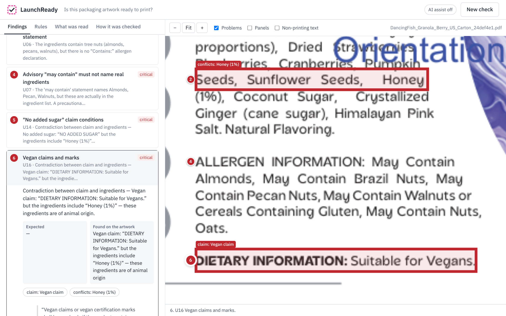
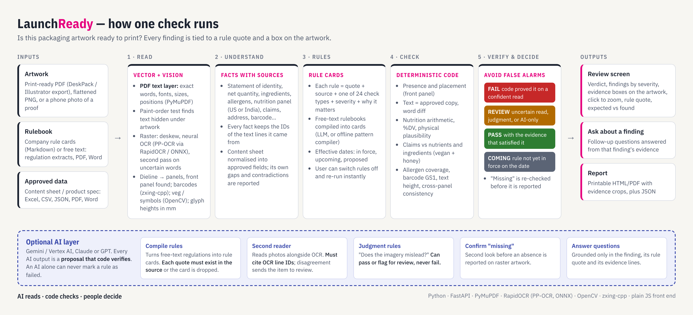

An AI-powered checker that reviews packaging artwork against a rulebook and the approved product data. It says what is definitely wrong, what needs a person, and what passed. Every finding has its rule quote and its evidence on the artwork.
AI reads · code checks · people decide
Before final artwork goes to print, someone must confirm that every required element is present and correctly placed, that the text and numbers match the approved content sheet, that claims are true for the recipe, and that the nutrition panel adds up. Today this means proofreading a PDF, a spreadsheet and a rulebook by hand. The costly errors are cross-document: a claim contradicted by an ingredient, a value that differs from the content sheet, an allergen missing from the "Contains" line. Reprints and recalls are expensive. A checker that raises false alarms gets ignored, so avoiding false alarms matters as much as catching errors.
| Verdict | When |
|---|---|
| FAIL must fix | Deterministic code found a violation on a confident reading |
| REVIEW needs a person | Uncertain reading, a judgment rule, or only an AI flagged it |
| PASS | Satisfied; the evidence that satisfied the rule is shown |
| COMING | Rule not in force on the check date (upcoming company rule, proposed regulation) |


| Part | Technology | Why it is used |
|---|---|---|
| Vector text | PyMuPDF text layer: words, fonts, sizes, positions, paint order | Exact reading of print files; finds hidden text |
| Raster text | RapidOCR: PaddleOCR PP-OCRv3 detection and recognition networks on ONNX Runtime (CPU, offline) | Photos, scans and outlined fonts; tiled for small print; second pass on uncertain words |
| Vision | OpenCV (panels, symbols, glyph height in mm), zxing-cpp (barcodes) and a GS1 check-digit verifier | Placement and minimum-height rules need geometry, not words |
| LLM (optional) | Google Gemini (Gemini API or Vertex AI express key); Claude or GPT also supported | Compiles free-text rulebooks, second reader for photos, judgment rules, confirms "missing" items, answers follow-up questions |
| Matching | RapidFuzz, word-level diffs | Near-miss search before "missing"; readable expected-vs-found |
| App | FastAPI, plain-JS single-page UI, printable HTML report, JSON export | Runs on a laptop with one command; no GPU needed |
Dancing Fish Granola US carton (DeskPack PDF) + Esko's US content sheet (Excel) + a 31-rule US rulebook (FDA 21 CFR 101, FALCPA and USDA organic rules, plus company standards). Not ready to print: 18 must fix, 4 need a person, 7 passed, 2 coming, in about 10 seconds.
We generated 26 single-error variants and 2 clean versions of a fictional product. Each was tested as a print PDF, a 200-dpi PNG and a simulated phone photo (tilted, blurred, noisy, no scale). Ground truth is known for every file.
| Input | Errors flagged | As a definite FAIL | False alarms | "Needs a person" per file | Time per file |
|---|---|---|---|---|---|
| Print PDF | 26 / 26 | 26 / 26 | 0 | 0.0 | 0.3 s |
| PNG, 200 dpi | 26 / 26 | 20 / 26 | 0 | 2.8 | 4.3 s |
| Phone-style photo | 26 / 26 | 21 / 26 | 0 | 3.9 | 8.1 s |
On images, some failures become reviews by design: when a reading can't be confirmed (bold type, mm heights without scale, look-alike characters), a person decides. 23 automated tests also cover units, AI guardrails, the samples end to end and the HTTP API.
Python 3.10+. run.sh (macOS / Linux) or run.bat (Windows) creates a virtual environment and starts the app at http://localhost:8000. Optional AI: copy .env.example to .env, add GEMINI_API_KEY, and check it with python tools/check_ai.py. Tests: python -m pytest -q. Evaluation: python tools/evaluate.py.
Limitations: the rulebooks are illustrative interpretations written for this demo, not legal advice. Fact extractors cover food labels (US, India); other categories need new extractors on the same engine. Next steps: diff against the previously approved artwork, multi-language panels, and running inside WebCenter on artwork upload.